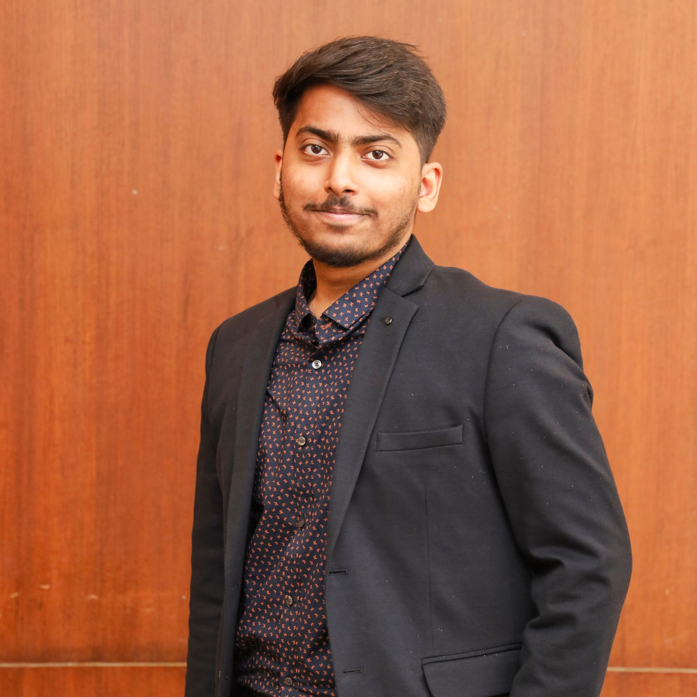

Sparsh Verma
sparshverma33@gmail.com | +91 72494 46317
A1-404, F Residences, Balewadi, Pune | 411045

Professional Summary
Dynamic and agile professional with a passion for learning and good foundation in technical skills. Demonstrated ability to adapt to new technologies quickly and effectively troubleshoot issues. Excellent communication skills and a strong team player, eager to contribute to a reputable organization and drive positive change. Intent on leveraging my capabilities to drive impactful transformations within your company while further advancing my own professional growth.
Educational Background
Vivekanand Education Society's Institute of Technology
- Bachelor of Engineering (IT) | 8.61 CGPA (current)
- JUNE 2020 - MAY 2024
The Orchid School, Pune
- HSC (class XII) | percentage: 84.2% | JULY 2020
Ryan International School, Delhi
- SSC (class X) | percentage: 85.4% | MAY 2018
Skills
-
Technical Skills:
-
Programming Languages:
-
Frameworks and tools:
-
IT Constructs:
-
DevOps:
- Git & GitHub
- AWS: S3, EC2, Lambda
-
DB Constructs:
Soft Skills:
- German Intermediate
- Power BI
- Problem Solving
- Time Management
- Active Listening
- Adaptability
- Creative thinking
- Team Player
- Work Ethic
Achievements
- Semi-finalist in Hidden Cipher Event by CSI-VESIT
- Quarterfinalist in Cricomania Event by CSI-VESIT
- Certified in German till A1 level
- Winner of Inter House Cricket Competition in School
- Certified in Karate till Orange Belt
Links
Other
© Sparsh Verma. All rights reserved.